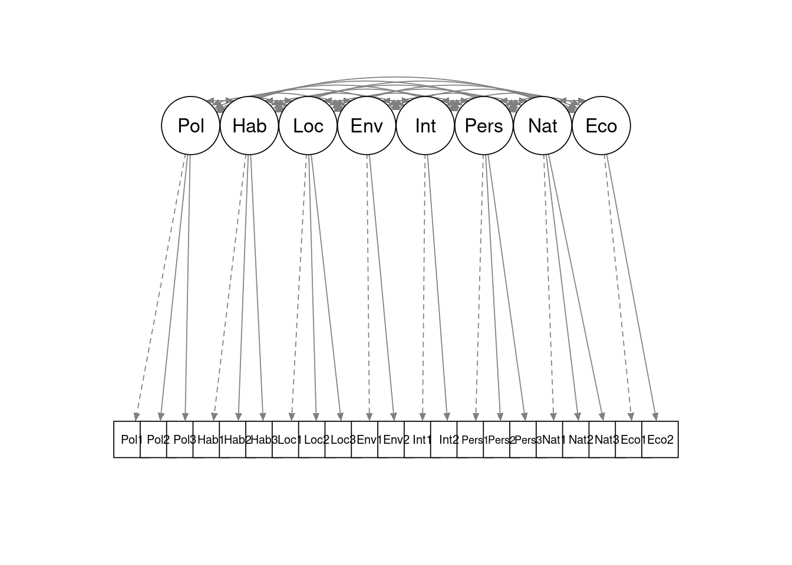
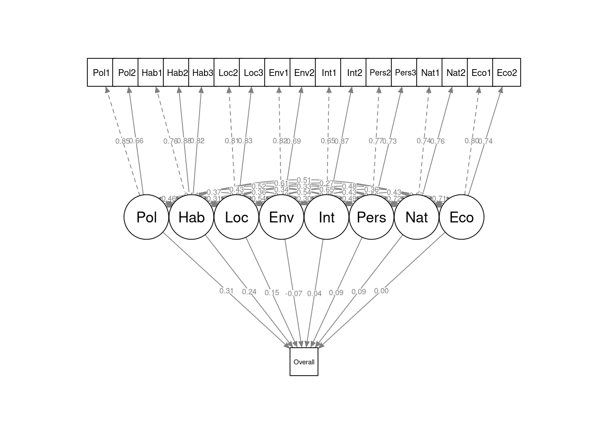

# if needed, get data
url <- "http://peopleanalytics-regression-book.org/data/speed_dating.csv"
speed_dating <- read.csv(url)9 Modeling Explicit and Latent Hierarchy in Data
So far in this book we have learned all of the most widely used and foundational regression techniques for inferential modeling. Starting with this chapter, we will look at situations where we need to adapt or combine techniques to address certain inference goals or data characteristics. In this chapter we look at some situations where data has a hierarchy and where we wish to consider this hierarchy in our modeling efforts.
It is very often the case that data has an explicit hierarchy. For example, each observation in our data may refer to a different individual and each such individual may be a member of a few different groups. Similarly, each observation might refer to an event involving an individual, and we may have data on multiple events for the same individual. For a particular problem that we are modeling, we may wish to take into consideration the effect of the hierarchical grouping. This requires a model which has a mixture of random effects and fixed effects—called a mixed model.
Separately, it can be the case that data we are given could have a latent hierarchy. The input variables in the data might be measures of a smaller set of higher-level latent constructs, and we may have a more interpretable model if we hypothesize, confirm and model those latent constructs against our outcome of interest rather than using a larger number of explicit input variables. Latent variable modeling is a common technique to address this situation, and in this chapter we will review a form of latent variable modeling called structural equation modeling, which is very effective especially in making inferences from survey instruments with large numbers of items.
These topics are quite broad, and there are many different approaches, techniques and terms involved in mixed modeling and latent variable modeling. In this chapter we will only cover some of the simpler approaches, which would suffice for the majority of common situations in people analytics. For a deeper treatment of these topics, see Jiang (2007) for mixed models and Bartholomew, Knott, and Moustaki (2011) or Skrondal and Rabe-Hesketh (2004) for latent variable models.
9.1 Mixed models for explicit hierarchy in data
The most common explicit hierarchies that we see in data are group-based and time-based. A group-based hierarchy occurs when we are taking observations that belong to different groups. For example, in our first walkthrough example in Chapter 4, we modeled final examination performance against examination performance for the previous three years. In this case we considered each student observation to be independent and identically distributed, and we ran a linear regression model on all the students. If we were to receive additional information that these students were actually a mix of students in different degree programs, then we may wish to take this into account in how we model the problem—that is, we would want to assume that each student observation is only independent and identically distributed within each degree program.
Similarly, a time-based hierarchy occurs when we have multiple observations of the same subject taken at different times. For example, if we are conducting a weekly survey on the same people over the course of a year, and we are modeling how answers to some questions might depend on answers to others, we may wish to consider the effect of the person on this model.
Both of these situations introduce a new grouping variable into the problem we are modeling, thus creating a hierarchy. It is not hard to imagine that analyzing each group may produce different statistical properties compared to analyzing the entire population—for example, there could be correlations between the data inside groups which are less evident when looking at the overall population. Therefore in some cases a model may provide more useful inferences if this grouping is taken into account.
9.1.1 Fixed and random effects
Let’s imagine that we have a set of observations consisting of a continuous outcome variable \(y\) and input variables \(x_1, x_2, \dots, x_p\). Let’s also assume that we have an additional data point for each observation where we assign it to a group \(G\). We are asked to determine the relationship between the outcome and the input variables. One option is to develop a linear model \(y = \beta_0 + \beta_1x_1 + \dots + \beta_px_p + \epsilon\), ignoring the group data. In this model, we assume that the coefficients all have a fixed effect on the input variables—that is, they act on every observation in the same way. This may be fine if there is trust that group membership is unlikely to have any impact on the relationship being modeled, or if we are comfortable making inferences about variables at the observation level only.
If, however, there is a belief that group membership may have an effect on the relationship being modeled, and if we are interested in interpreting our model at the group and observation level, then we need to adjust our model to a mixed model for more accurate and reliable inference. The most common adjustment is a random intercept. In this situation, we imagine that group membership has an effect on the ‘starting point’ of the relationship: the intercept. Therefore, for a given observation \(y = \alpha_G + \beta_0 + \beta_1x_1 + \dots + \beta_px_p + \epsilon\), where \(\alpha_G\) is a random effect with a mean of zero associated with the group that the observation is a member of. This can be restated as:
\[ y = \beta_G + \beta_1x_1 + \dots + \beta_px_p + \epsilon \]
where \(\beta_G = \alpha_G + \beta_0\), which is a random intercept with a mean of \(\beta_0\).
This model is very similar to a standard linear regression model, except instead of having a fixed intercept, we have an intercept that varies by group. Therefore, we will essentially have two ‘levels’ in our model: one at the observation level to describe \(y\) and one at the group level to describe \(\beta_G\). For this reason mixed models are sometimes known as multilevel models.
It is not too difficult to see how this approach can be extended. For example, suppose that we believe the groups also have an effect on the coefficient of the input variable \(x_1\) as well as the intercept. Then
\[ y = \beta_{G0} + \beta_{G1}x_1 + \beta_2x_2 + \dots + \beta_px_p \] where \(\beta_{G0}\) is a random intercept with a mean of \(\beta_0\), and \(\beta_{G1}\) is a random slope with a mean of \(\beta_1\). In this case, a mixed model would return the estimated coefficients at the observation level and the statistics for the random effects \(\beta_{G0}\) and \(\beta_{G1}\) at the group level.
Finally, our model does not need to be linear for this to apply. This approach also extends to logistic models and other generalized linear models. For example, if \(y\) was a binary outcome variable and our model was a binomial logistic regression model, our last equation would translate to
\[ \mathrm{ln}\left(\frac{P(y = 1)}{P(y = 0)}\right) = \beta_{G0} + \beta_{G1}x_1 + \beta_2x_2 + \dots + \beta_px_p \]
9.1.2 Running a mixed model
Let’s look at a fun and straightforward example of how mixed models can be useful. The speed_dating data set is a set of information captured during experiments with speed dating by students at Columbia University in New York1. Each row represents one meeting between an individual and a partner of the opposite sex. The data contains the following fields:
iidis an id number for the individual.genderis the gender of the individual with 0 as Female and 1 as Male.matchindicates that the meeting resulted in a match.sameraceindicates that both the individual and the partner were of the same race.raceis the race of the individual, with race coded as follows: Black/African American=1, European/Caucasian-American=2, Latino/Hispanic American=3, Asian/Pacific Islander/Asian-American=4, Native American=5, Other=6.goalis the reason why the individual is participating in the event, coded as follows: Seemed like a fun night out=1, To meet new people=2, To get a date=3, Looking for a serious relationship=4, To say I did it=5, Other=6.decis a binary rating from the individual as to whether they would like to see their partner again (1 is Yes and 0 is No).attris the individual’s rating out of 10 on the attractiveness of the partner.intelis the individual’s rating out of 10 on the intelligence level of the partner.probis the individual’s rating out of 10 on whether they believe the partner will want to see them again.agediffis the absolute difference in the ages of the individual and the partner.
This data can be explored in numerous ways, but we will focus here on modeling options. We are interested in the binary outcome dec (the decision of the individual), and we would like to understand how it relates to the age difference, the racial similarity and the ratings on attr, intel and prob. First, let’s assume that we don’t care about how an individual makes up their mind about their speed date, and that we are only interested in the dynamics of speed date decisions. Then we would simply run a binomial logistic regression on our data set, ignoring iid and other grouping variables like race, goal and gender.
# run standard binomial model
model <- glm(dec ~ agediff + samerace + attr + intel + prob,
data = speed_dating,
family = "binomial")
summary(model)
Call:
glm(formula = dec ~ agediff + samerace + attr + intel + prob,
family = "binomial", data = speed_dating)
Coefficients:
Estimate Std. Error z value Pr(>|z|)
(Intercept) -5.812900 0.184340 -31.534 <2e-16 ***
agediff -0.010518 0.009029 -1.165 0.2440
samerace -0.093422 0.055710 -1.677 0.0936 .
attr 0.661139 0.019382 34.111 <2e-16 ***
intel -0.004485 0.020763 -0.216 0.8290
prob 0.270553 0.014565 18.575 <2e-16 ***
---
Signif. codes: 0 '***' 0.001 '**' 0.01 '*' 0.05 '.' 0.1 ' ' 1
(Dispersion parameter for binomial family taken to be 1)
Null deviance: 10647.3 on 7788 degrees of freedom
Residual deviance: 8082.9 on 7783 degrees of freedom
(589 observations deleted due to missingness)
AIC: 8094.9
Number of Fisher Scoring iterations: 5In general, we see that the factors which significantly influence the speed dating decision seem to be the attractiveness of the partner and the feeling of reciprocation of interest from the partner, and that age difference, racial similarity and intelligence do not seem to play a significant role at the level of the speed date itself.
Now let’s say that we are interested in how a given individual weighs up these factors in coming to a decision. Different individuals may have different ingoing criteria for making speed dating decisions. As a result, each individual may have varying base likelihoods of a positive decision, and each individual may be affected by the input variables in different ways as they come to their decision. Therefore we will need to assign random effects for individuals based on iid. The lme4 package in R contains functions for performing mixed linear regression models and mixed generalized linear regression models. These functions take formulas with additional terms to define the random effects to be estimated. The function for a linear model is lmer() and for a generalized linear model is glmer().
In the simple case, let’s assume that each individual has a different ingoing base likelihood of making a positive decision on a speed date. We will therefore model a random intercept according to the iid of the individual. Here we would use the formula dec ~ agediff + samerace + attr + intel + prob + (1 | iid), where (1 | iid) means ‘a random effect for iid on the intercept of the model’.
# run binomial mixed effects model
library(lme4)
iid_intercept_model <- lme4:::glmer(
dec ~ agediff + samerace + attr + intel + prob + (1 | iid),
data = speed_dating,
family = "binomial"
)# view summary without correlation table of fixed effects
summary(iid_intercept_model,
correlation = FALSE)Generalized linear mixed model fit by maximum likelihood (Laplace
Approximation) [glmerMod]
Family: binomial ( logit )
Formula: dec ~ agediff + samerace + attr + intel + prob + (1 | iid)
Data: speed_dating
AIC BIC logLik -2*log(L) df.resid
6420.3 6469.0 -3203.1 6406.3 7782
Scaled residuals:
Min 1Q Median 3Q Max
-25.6966 -0.3644 -0.0606 0.3608 25.0369
Random effects:
Groups Name Variance Std.Dev.
iid (Intercept) 5.18 2.276
Number of obs: 7789, groups: iid, 541
Fixed effects:
Estimate Std. Error z value Pr(>|z|)
(Intercept) -12.88882 0.42139 -30.587 < 2e-16 ***
agediff -0.03671 0.01401 -2.621 0.00877 **
samerace 0.20187 0.08140 2.480 0.01314 *
attr 1.07894 0.03334 32.364 < 2e-16 ***
intel 0.31592 0.03472 9.098 < 2e-16 ***
prob 0.61998 0.02873 21.581 < 2e-16 ***
---
Signif. codes: 0 '***' 0.001 '**' 0.01 '*' 0.05 '.' 0.1 ' ' 1We can see the two levels of results in this summary. The fixed effects level gives the coefficients of the model at an observation (speed date) level, and the random effects tell us how the intercept (or base likelihood) of that model can vary according to the individual. We see that there is considerable variance in the intercept from individual to individual, and taking this into account, we now see that the decision of an individual on a given date is significantly influenced by all the factors in this model. If we had stuck with the simple binomial model, the effects of age difference, racial similarity and intelligence at an individual level would have gotten lost, and we could have reached the erroneous conclusion that none of these really matter in speed dating.
To illustrate this graphically, Figure 9.2 shows the speed_dating data for a subset of the three individuals with IIDs 252, 254 and 256. The curve represents a plain binomial logistic regression model fitted on the attr and prob input variables, irrelevant of the IID of the individual.
model against a subset of the speed_dating data for three specific iids
Figure 9.4 shows the three separate curves for each IID generated by a mixed binomial logistic regression model with a random intercept fitted on the same two input variables. Here, we can see that different individuals process the two inputs in their decision making in different ways, leading to different individual formulas which determine the likelihood of a positive decision. While a plain binomial regression model will find the best single formula from the data irrelevant of the individual, a mixed model allows us to take these different individual formulas into account in determining the effects of the input variables.
iid_intercept_model against a subset of the speed_dating data for three specific iids
If we believe that different individuals are influenced differently by one or more of the various decision factors they consider during a speed date, we can extend our random effects to the slope coefficients of our model. For example we could use (1 + agediff | iid) to model a random effect of iid on the intercept and the agediff coefficient. Similarly, if we wanted to consider two grouping variables—like iid and goal—on the intercept, we could add both (1 | iid) and (1 | goal) to our model formula.
9.1.3 Mixed effects models using Python
The pymer4 package provides a simple implementation of linear and generalized linear mixed effects models. The glmer() function is used for generalized linear mixed models, and the specific model is defined by the family parameter. This package is implemented in R under the hood, and also requires Polars rather than Pandas DataFrames. To avoid issues related to the back-end R code, it is recommended that you explicitly remove all rows containing NaN values before fitting a model, or else perform imputation to fill these values.
To recreate our model random intercept model from the previous section using pymer4, we would use the following code:
from pymer4.models import glmer
import pandas as pd
import polars as pl
url = "http://peopleanalytics-regression-book.org/data/speed_dating.csv"
# load data and drop rows with NaN values, then convert to Polars
speed_dating = pd.read_csv(url).dropna()
speed_dating = pl.DataFrame(speed_dating)
# fit binomial mixed effects model
model = glmer("dec ~ agediff + samerace + attr + intel + prob + (1 | iid)",
data = speed_dating, family = 'binomial')
model.fit()
# view the table of results
model.summary()._tbl_data
shape: (9, 10)
| rfx | param | estimate | conf_low | conf_high | std_error | z_stat | df | p_value | stars |
|---|---|---|---|---|---|---|---|---|---|
| str | str | f64 | f64 | f64 | f64 | f64 | f64 | str | str |
| "iid-sd" | "(Intercept)" | 2.278032 | null | null | null | null | null | null | null |
| null | null | null | null | null | null | null | null | null | null |
| "Fixed Effects:" | null | null | null | null | null | null | null | null | null |
| null | "(Intercept)" | -12.893847 | -13.721121 | -12.066572 | 0.422087 | -30.547861 | inf | "<.001" | "***" |
| null | "agediff" | -0.036687 | -0.064145 | -0.009229 | 0.014009 | -2.618721 | inf | "0.008826" | "**" |
| null | "samerace" | 0.198032 | 0.038387 | 0.357678 | 0.081453 | 2.43124 | inf | "0.01505" | "*" |
| null | "attr" | 1.07863 | 1.013247 | 1.144012 | 0.033359 | 32.33411 | inf | "<.001" | "***" |
| null | "intel" | 0.316896 | 0.248741 | 0.385052 | 0.034774 | 9.113025 | inf | "<.001" | "***" |
| null | "prob" | 0.619761 | 0.563438 | 0.676085 | 0.028737 | 21.566592 | inf | "<.001" | "***" |
9.2 Structural equation models for latent hierarchy in data
In this section we will focus entirely on survey data use cases, as this is the most common application of structural equation modeling in people analytics. However it should be noted that survey data is not the only situation where latent variables may be modeled, and this technology has substantially broader applications. Indeed, advanced practitioners may see opportunities to experiment with this technology in other use cases.
It is a frequent occurrence with surveys conducted on large samples of people, such as a public survey or a large company survey, that attempts to run regression models can be problematic due to the large number of survey questions or items. Often many of the items are highly correlated, and even if they were not, high dimensionality makes interpretability very challenging. Decision-makers are not usually interested in explanations that involve 50 or 100 variables.
Usually, such a large number of survey items are not each independently measuring a different construct. Many of the items can be considered to be addressing similar thematic constructs. For example, the items ‘I believe I am compensated well’ and ‘I am happy with the benefits offered by my employer’ could both be considered to be related to employee rewards. In some cases, survey instruments can be explicitly constructed around these themes, and in other cases, surveys have grown organically over time to include a disorganized set of items that could be grouped into themes after the fact.
It is a common request for an analyst to model a certain outcome using the many items in a complex survey as input variables. In some cases the outcome being modeled is an item in the survey itself—usually some overall measure of sentiment—or in other cases the outcome could be independent of the survey instrument, for example future attrition from the organization. In this situation, a model using the themes as input variables is likely to be a lot more useful and interpretable than a model using the items as input variables.
Structural equation modeling is a technique that allows an analyst to hypothesize a smaller set of latent variables or factors that explain the responses to the survey items themselves (the ‘measured variables’), and then regresses the outcome of interest against these latent factors. It is a two-part approach, each part being a separate model in and of itself, as follows:
Measurement model: This is focused on how well the hypothesized factors explain the responses to the survey items using a technique called factor analysis. In the most common case, where a subject matter expert has pre-organized the items into several groups corresponding to hypothesized latent variables, the process is called confirmatory factor analysis, and the objective is to confirm that the groupings represent a high-quality measurement model, adjusting as necessary to refine the model. In the simplest case, items are fitted into separate independent themes with no overlap.
Structural model: Assuming a satisfactory measurement model, the structural model is effectively a regression model which explains how each of the proposed factors relate to the outcome of interest.
As a walkthrough example, we will work with the politics_survey data set.
# if needed, get data
url <- "http://peopleanalytics-regression-book.org/data/politics_survey.csv"
politics_survey <- read.csv(url)This data set represents the results of a survey conducted by a political party on a set of approximately 2100 voters. The results are on a Likert scale of 1 to 4 where 1 indicates strong negative sentiment with a statement and 4 indicates strong positive sentiment. Subject matter experts have already grouped the items into proposed latent variables or factors, and the data takes the following form:
Overallrepresents the overall intention to vote for the party in the next election.- Items beginning with
Polare considered to be related to the policies of the political party. - Items beginning with
Habare considered to be related to prior voting habits in relation to the political party. - Items beginning with
Locare considered to be related to interest in local issues around where the respondent resided. - Items beginning with
Envare considered to be related to interest in environmental issues. - Items beginning with
Intare considered to be related to interest in international issues. - Items beginning with
Persare considered to be related to the personalities of the party representatives/leaders. - Items beginning with
Natare considered to be related to interest in national issues. - Items beginning with
Ecoare considered to be related to interest in economic issues.
Let’s take a quick look at the data.
head(politics_survey) Overall Pol1 Pol2 Pol3 Hab1 Hab2 Hab3 Loc1 Loc2 Loc3 Loc4 Env1 Env2 Int1 Int2
1 3 2 2 2 2 2 2 3 3 2 2 2 3 3 3
2 4 4 4 4 4 4 4 4 4 4 4 4 4 4 3
3 4 4 4 4 3 2 2 4 4 4 4 4 4 4 4
4 3 4 4 4 3 2 2 4 3 3 4 4 4 4 3
5 3 3 3 4 4 3 3 3 4 3 3 4 4 3 4
6 4 3 3 4 3 2 3 3 3 2 2 3 3 4 3
Pers1 Pers2 Pers3 Nat1 Nat2 Nat3 Eco1 Eco2
1 3 4 4 3 3 4 3 3
2 4 4 4 4 4 4 3 4
3 4 4 4 4 4 4 4 4
4 2 3 3 4 4 2 4 4
5 4 3 3 4 3 4 3 3
6 3 4 3 3 4 3 4 4The outcome of interest here is the Overall rating. Our first aim is to confirm that the eight factors suggested by the subject matter experts represent a satisfactory measurement model (that they reasonably explain the responses to the 22 items), adjusting or refining if needed. Assuming we can confirm a satisfactory measurement model, our second aim is to run a structural model to determine how each factor relates to the overall intention to vote for the party in the next election.
9.2.1 Running and assessing the measurement model
The proposed measurement model can be seen in Figure 9.5. In this path diagram, we see the eight latent variables or factors (circles) and how they map to the individual measured items (squares) in the survey using single headed arrows. Here we are making a simplifying assumption that each latent variable influences an independent group of survey items. The diagram also notes that the latent variables may be correlated with each other, as indicated by the double-headed arrows at the top. Dashed-line paths indicate that a specific item will be used to scale the variance of the latent factor.

politics_survey
The lavaan package in R is a specialized package for running analysis on latent variables. The function cfa() can be used to perform a confirmatory factor analysis on a specified measurement model. The measurement model can be specified using an appropriately commented and formatted text string as follows. Note the =~ notation, and note also that each factor is defined on a new line.
# define measurement model
meas_mod <- "
# measurement model
Pol =~ Pol1 + Pol2 + Pol3
Hab =~ Hab1 + Hab2 + Hab3
Loc =~ Loc1 + Loc2 + Loc3
Env =~ Env1 + Env2
Int =~ Int1 + Int2
Pers =~ Pers1 + Pers2 + Pers3
Nat =~ Nat1 + Nat2 + Nat3
Eco =~ Eco1 + Eco2
"With the measurement model defined, the confirmatory factor analysis can be run and a summary viewed. The lavaan summary functions used in this section produce quite large outputs. We will proceed to highlight which parts of this output are important in interpreting and refining the model.
library(lavaan)
cfa_meas_mod <- lavaan::cfa(model = meas_mod, data = politics_survey)
lavaan::summary(cfa_meas_mod, fit.measures = TRUE, standardized = TRUE)lavaan 0.6-20 ended normally after 108 iterations
Estimator ML
Optimization method NLMINB
Number of model parameters 70
Number of observations 2108
Model Test User Model:
Test statistic 838.914
Degrees of freedom 161
P-value (Chi-square) 0.000
Model Test Baseline Model:
Test statistic 17137.996
Degrees of freedom 210
P-value 0.000
User Model versus Baseline Model:
Comparative Fit Index (CFI) 0.960
Tucker-Lewis Index (TLI) 0.948
Loglikelihood and Information Criteria:
Loglikelihood user model (H0) -37861.518
Loglikelihood unrestricted model (H1) -37442.061
Akaike (AIC) 75863.036
Bayesian (BIC) 76258.780
Sample-size adjusted Bayesian (SABIC) 76036.383
Root Mean Square Error of Approximation:
RMSEA 0.045
90 Percent confidence interval - lower 0.042
90 Percent confidence interval - upper 0.048
P-value H_0: RMSEA <= 0.050 0.998
P-value H_0: RMSEA >= 0.080 0.000
Standardized Root Mean Square Residual:
SRMR 0.035
Parameter Estimates:
Standard errors Standard
Information Expected
Information saturated (h1) model Structured
Latent Variables:
Estimate Std.Err z-value P(>|z|) Std.lv Std.all
Pol =~
Pol1 1.000 0.568 0.772
Pol2 0.883 0.032 27.431 0.000 0.501 0.737
Pol3 0.488 0.024 20.575 0.000 0.277 0.512
Hab =~
Hab1 1.000 0.623 0.755
Hab2 1.207 0.032 37.980 0.000 0.752 0.887
Hab3 1.138 0.031 36.603 0.000 0.710 0.815
Loc =~
Loc1 1.000 0.345 0.596
Loc2 1.370 0.052 26.438 0.000 0.473 0.827
Loc3 1.515 0.058 26.169 0.000 0.523 0.801
Env =~
Env1 1.000 0.408 0.809
Env2 0.605 0.031 19.363 0.000 0.247 0.699
Int =~
Int1 1.000 0.603 0.651
Int2 1.264 0.060 20.959 0.000 0.762 0.869
Pers =~
Pers1 1.000 0.493 0.635
Pers2 1.048 0.041 25.793 0.000 0.517 0.770
Pers3 0.949 0.039 24.440 0.000 0.468 0.695
Nat =~
Nat1 1.000 0.522 0.759
Nat2 0.991 0.032 31.325 0.000 0.518 0.744
Nat3 0.949 0.035 27.075 0.000 0.495 0.638
Eco =~
Eco1 1.000 0.525 0.791
Eco2 1.094 0.042 26.243 0.000 0.575 0.743
Covariances:
Estimate Std.Err z-value P(>|z|) Std.lv Std.all
Pol ~~
Hab 0.165 0.011 14.947 0.000 0.466 0.466
Loc 0.106 0.007 15.119 0.000 0.540 0.540
Env 0.089 0.007 12.101 0.000 0.385 0.385
Int 0.146 0.012 12.248 0.000 0.425 0.425
Pers 0.162 0.010 15.699 0.000 0.577 0.577
Nat 0.177 0.010 17.209 0.000 0.596 0.596
Eco 0.150 0.010 15.123 0.000 0.504 0.504
Hab ~~
Loc 0.069 0.006 11.060 0.000 0.323 0.323
Env 0.051 0.007 7.161 0.000 0.200 0.200
Int 0.134 0.012 11.395 0.000 0.357 0.357
Pers 0.121 0.010 12.619 0.000 0.393 0.393
Nat 0.105 0.009 11.271 0.000 0.324 0.324
Eco 0.089 0.009 9.569 0.000 0.273 0.273
Loc ~~
Env 0.076 0.005 15.065 0.000 0.541 0.541
Int 0.091 0.007 12.192 0.000 0.438 0.438
Pers 0.098 0.007 14.856 0.000 0.574 0.574
Nat 0.116 0.007 16.780 0.000 0.642 0.642
Eco 0.090 0.006 14.354 0.000 0.496 0.496
Env ~~
Int 0.075 0.008 9.506 0.000 0.303 0.303
Pers 0.075 0.007 11.482 0.000 0.375 0.375
Nat 0.093 0.007 13.616 0.000 0.439 0.439
Eco 0.078 0.007 11.561 0.000 0.365 0.365
Int ~~
Pers 0.156 0.012 13.349 0.000 0.525 0.525
Nat 0.186 0.012 14.952 0.000 0.592 0.592
Eco 0.137 0.011 12.374 0.000 0.432 0.432
Pers ~~
Nat 0.185 0.010 17.898 0.000 0.717 0.717
Eco 0.153 0.010 15.945 0.000 0.590 0.590
Nat ~~
Eco 0.196 0.010 19.440 0.000 0.715 0.715
Variances:
Estimate Std.Err z-value P(>|z|) Std.lv Std.all
.Pol1 0.219 0.012 19.015 0.000 0.219 0.404
.Pol2 0.211 0.010 21.455 0.000 0.211 0.457
.Pol3 0.216 0.007 29.384 0.000 0.216 0.737
.Hab1 0.293 0.011 25.855 0.000 0.293 0.430
.Hab2 0.153 0.011 14.434 0.000 0.153 0.213
.Hab3 0.254 0.012 21.814 0.000 0.254 0.335
.Loc1 0.217 0.007 29.063 0.000 0.217 0.645
.Loc2 0.103 0.006 18.226 0.000 0.103 0.316
.Loc3 0.153 0.007 20.463 0.000 0.153 0.358
.Env1 0.088 0.008 10.643 0.000 0.088 0.345
.Env2 0.064 0.003 18.407 0.000 0.064 0.511
.Int1 0.495 0.021 23.182 0.000 0.495 0.576
.Int2 0.188 0.025 7.653 0.000 0.188 0.244
.Pers1 0.361 0.013 27.065 0.000 0.361 0.597
.Pers2 0.184 0.009 20.580 0.000 0.184 0.408
.Pers3 0.234 0.009 24.865 0.000 0.234 0.517
.Nat1 0.201 0.009 23.320 0.000 0.201 0.425
.Nat2 0.215 0.009 24.119 0.000 0.215 0.446
.Nat3 0.357 0.013 27.981 0.000 0.357 0.593
.Eco1 0.165 0.010 16.244 0.000 0.165 0.374
.Eco2 0.268 0.013 20.071 0.000 0.268 0.448
Pol 0.323 0.018 18.035 0.000 1.000 1.000
Hab 0.389 0.020 19.276 0.000 1.000 1.000
Loc 0.119 0.009 13.906 0.000 1.000 1.000
Env 0.166 0.011 15.560 0.000 1.000 1.000
Int 0.364 0.026 13.846 0.000 1.000 1.000
Pers 0.243 0.017 14.619 0.000 1.000 1.000
Nat 0.273 0.015 18.788 0.000 1.000 1.000
Eco 0.276 0.015 17.974 0.000 1.000 1.000This is a large set of results, but we can focus in on some important parameters to examine. First, we note that the results did not come attached to a warning. One particular warning to look out for relates to the covariance matrix being non-positive definite. This renders some of the attempted measurement invalid and is usually caused by too small a sample size for the complexity of the measurement model. Since we did not receive this warning, we can proceed safely.
Second, we examine the fit statistics. Numerous statistics are reported2, but for larger samples such as this data set, the following measures should be examined:
CFI and TLI, which compare the proposed model to a baseline (null or random) model to determine if it is better. Ideally we look for both of these measures to exceed 0.95. We see that our measurement model comes very close to meeting these criteria.
RMSEA should ideally be less than 0.06, which is met by our measurement model.
SRMR should ideally be less than 0.08, which is met by our measurement model.
Finally, the parameter estimates for the latent variables should be examined. In particular the Std.all column which is similar to standardized regression coefficients. These parameters are commonly known as factor loadings—they can be interpreted as the extent to which the item response is explained by the proposed latent variable. In general, factor loadings of 0.7 or above are considered reasonable. Factor loadings less than this may be introducing unacceptable measurement error. One option if this occurs is to drop the item completely from the measurement model, or to explore an alternative measurement model with the item assigned to another latent variable. In any case the analyst will need to balance these considerations against the need to have factors measured against multiple items wherever possible in order to minimize other aspects of measurement error.
In our case we could consider dropping Pol3, Loc1, Pers1 and Nat3 from the measurement model as they have factor loadings of less than 0.7 and are in factors that contain three items. We will fit this revised measurement model, and rather than printing the entire output again, we will focus here on our CFI, TLI, RMSEA and SRMR statistics to see if they have improved. It is advisable, however, that factor loadings are also checked, especially where primary items that scale the variance of latent factors have been removed.
meas_mod_revised <- "
# measurement model
Pol =~ Pol1 + Pol2
Hab =~ Hab1 + Hab2 + Hab3
Loc =~ Loc2 + Loc3
Env =~ Env1 + Env2
Int =~ Int1 + Int2
Pers =~ Pers2 + Pers3
Nat =~ Nat1 + Nat2
Eco =~ Eco1 + Eco2
"
cfa_meas_mod_rev <- lavaan::cfa(model = meas_mod_revised,
data = politics_survey)
fits <- lavaan::fitmeasures(cfa_meas_mod_rev)
fits[c("cfi", "tli", "rmsea", "srmr")] cfi tli rmsea srmr
0.97804888 0.96719394 0.03966962 0.02736629 We now see that our measurement model comfortably meets all fit requirements. In our case we chose to completely drop four items from the model. Analysts may wish to experiment with relaxing criteria on dropping items, or on reassigning items to other factors to achieve a good balance between fit and factor measurement reliability.
9.2.2 Running and interpreting the structural model
With a satisfactory measurement model, the structural model is a simple regression formula. The sem() function in lavaan can be used to perform a full structural equation model including the measurement model and structural model. Like for cfa(), an extensive output can be expected from this function, but assuming that our measurement model is satisfactory, our key interest is now in the structural model elements of this output.
# define full SEM using revised measurement model
full_sem <- "
# measurement model
Pol =~ Pol1 + Pol2
Hab =~ Hab1 + Hab2 + Hab3
Loc =~ Loc2 + Loc3
Env =~ Env1 + Env2
Int =~ Int1 + Int2
Pers =~ Pers2 + Pers3
Nat =~ Nat1 + Nat2
Eco =~ Eco1 + Eco2
# structural model
Overall ~ Pol + Hab + Loc + Env + Int + Pers + Nat + Eco
"
# run full SEM
full_model <- lavaan::sem(model = full_sem, data = politics_survey)
lavaan::summary(full_model, standardized = TRUE)lavaan 0.6-20 ended normally after 99 iterations
Estimator ML
Optimization method NLMINB
Number of model parameters 71
Number of observations 2108
Model Test User Model:
Test statistic 465.318
Degrees of freedom 100
P-value (Chi-square) 0.000
Parameter Estimates:
Standard errors Standard
Information Expected
Information saturated (h1) model Structured
Latent Variables:
Estimate Std.Err z-value P(>|z|) Std.lv Std.all
Pol =~
Pol1 1.000 0.626 0.850
Pol2 0.714 0.029 25.038 0.000 0.447 0.657
Hab =~
Hab1 1.000 0.630 0.763
Hab2 1.184 0.031 38.592 0.000 0.746 0.879
Hab3 1.127 0.030 37.058 0.000 0.710 0.816
Loc =~
Loc2 1.000 0.461 0.806
Loc3 1.179 0.036 32.390 0.000 0.544 0.833
Env =~
Env1 1.000 0.411 0.815
Env2 0.596 0.031 19.281 0.000 0.245 0.695
Int =~
Int1 1.000 0.605 0.653
Int2 1.256 0.062 20.366 0.000 0.760 0.867
Pers =~
Pers2 1.000 0.520 0.774
Pers3 0.939 0.036 25.818 0.000 0.488 0.726
Nat =~
Nat1 1.000 0.511 0.742
Nat2 1.033 0.034 29.958 0.000 0.527 0.758
Eco =~
Eco1 1.000 0.529 0.797
Eco2 1.078 0.042 25.716 0.000 0.570 0.737
Regressions:
Estimate Std.Err z-value P(>|z|) Std.lv Std.all
Overall ~
Pol 0.330 0.036 9.281 0.000 0.206 0.307
Hab 0.255 0.024 10.614 0.000 0.161 0.240
Loc 0.224 0.047 4.785 0.000 0.103 0.154
Env -0.114 0.042 -2.738 0.006 -0.047 -0.070
Int 0.046 0.028 1.605 0.108 0.028 0.041
Pers 0.112 0.047 2.383 0.017 0.058 0.087
Nat 0.122 0.071 1.728 0.084 0.063 0.093
Eco 0.002 0.043 0.041 0.967 0.001 0.001
Covariances:
Estimate Std.Err z-value P(>|z|) Std.lv Std.all
Pol ~~
Hab 0.183 0.012 15.476 0.000 0.465 0.465
Loc 0.156 0.009 16.997 0.000 0.540 0.540
Env 0.096 0.008 12.195 0.000 0.374 0.374
Int 0.162 0.013 12.523 0.000 0.427 0.427
Pers 0.171 0.011 15.975 0.000 0.525 0.525
Nat 0.195 0.011 17.798 0.000 0.610 0.610
Eco 0.167 0.011 15.752 0.000 0.506 0.506
Hab ~~
Loc 0.091 0.008 11.218 0.000 0.315 0.315
Env 0.052 0.007 7.199 0.000 0.200 0.200
Int 0.138 0.012 11.426 0.000 0.361 0.361
Pers 0.112 0.010 11.484 0.000 0.341 0.341
Nat 0.105 0.010 11.045 0.000 0.327 0.327
Eco 0.091 0.009 9.608 0.000 0.273 0.273
Loc ~~
Env 0.103 0.006 16.413 0.000 0.544 0.544
Int 0.120 0.010 12.529 0.000 0.429 0.429
Pers 0.130 0.008 16.209 0.000 0.542 0.542
Nat 0.153 0.008 18.203 0.000 0.648 0.648
Eco 0.117 0.008 14.985 0.000 0.479 0.479
Env ~~
Int 0.075 0.008 9.505 0.000 0.303 0.303
Pers 0.075 0.007 11.058 0.000 0.351 0.351
Nat 0.091 0.007 13.181 0.000 0.434 0.434
Eco 0.079 0.007 11.583 0.000 0.364 0.364
Int ~~
Pers 0.153 0.012 13.118 0.000 0.486 0.486
Nat 0.173 0.012 14.159 0.000 0.560 0.560
Eco 0.138 0.011 12.293 0.000 0.431 0.431
Pers ~~
Nat 0.192 0.010 18.922 0.000 0.724 0.724
Eco 0.156 0.010 16.369 0.000 0.567 0.567
Nat ~~
Eco 0.192 0.010 18.968 0.000 0.710 0.710
Variances:
Estimate Std.Err z-value P(>|z|) Std.lv Std.all
.Pol1 0.150 0.013 11.205 0.000 0.150 0.277
.Pol2 0.263 0.010 25.479 0.000 0.263 0.569
.Hab1 0.285 0.011 25.570 0.000 0.285 0.418
.Hab2 0.163 0.010 15.746 0.000 0.163 0.227
.Hab3 0.253 0.011 22.046 0.000 0.253 0.334
.Loc2 0.114 0.006 18.168 0.000 0.114 0.350
.Loc3 0.130 0.008 15.729 0.000 0.130 0.306
.Env1 0.085 0.008 10.227 0.000 0.085 0.336
.Env2 0.064 0.003 18.701 0.000 0.064 0.518
.Int1 0.492 0.022 22.597 0.000 0.492 0.574
.Int2 0.192 0.025 7.547 0.000 0.192 0.249
.Pers2 0.181 0.010 17.472 0.000 0.181 0.401
.Pers3 0.215 0.010 21.151 0.000 0.215 0.474
.Nat1 0.213 0.009 22.690 0.000 0.213 0.450
.Nat2 0.205 0.010 21.502 0.000 0.205 0.425
.Eco1 0.160 0.010 15.413 0.000 0.160 0.364
.Eco2 0.273 0.014 20.156 0.000 0.273 0.457
.Overall 0.242 0.008 29.506 0.000 0.242 0.537
Pol 0.392 0.020 19.235 0.000 1.000 1.000
Hab 0.397 0.020 19.581 0.000 1.000 1.000
Loc 0.213 0.011 19.724 0.000 1.000 1.000
Env 0.169 0.011 15.606 0.000 1.000 1.000
Int 0.366 0.027 13.699 0.000 1.000 1.000
Pers 0.270 0.015 17.514 0.000 1.000 1.000
Nat 0.261 0.015 17.787 0.000 1.000 1.000
Eco 0.280 0.016 17.944 0.000 1.000 1.000The Std.all column of the Regressions section of the output provides the fundamentals of the structural model—these are standardized estimates which can be approximately interpreted as the proportion of the variance of the outcome that is explained by each factor. Here we can make the following interpretations:
Policies, habit and interest in local issues represent the three strongest drivers of likelihood of voting for the party at the next election, and explain approximately 70% of the overall variance in the outcome.
Interest in national or international issues, and interest in the economy each have no significant relationship with likelihood to vote for the party at the next election.
Interest in the environment has a significant negative relationship with likelihood to vote for the party at the next election.

politics_survey
The full structural equation model can be seen in Figure 9.6. This simple example illustrates the value of structural equation modeling in both reducing the dimensions of a complex regression problem and in developing more intuitive and interpretable results for stakeholders. The underlying theory of latent variable modeling, and its implementation in the lavaan package, offer much more flexibility and parameter control options than illustrated here and further exploration is highly recommended. Bartholomew, Knott, and Moustaki (2011) and Skrondal and Rabe-Hesketh (2004) are excellent resources for a deeper study of the theory and a wider range of case examples.
9.2.3 Structural equation models using Python
The semopy package is a specialized package for the implementation of Structural Equation Models in Python, and its implementation is very similar to the lavaan package in R. However, its reporting is not as intuitive compared to lavaan. A full tutorial is available here. Here is an example of how to run the same model as that studied in Section 9.2 using semopy.
import pandas as pd
from semopy import Model
# get data
url = "http://peopleanalytics-regression-book.org/data/politics_survey.csv"
politics_survey = pd.read_csv(url)
# define full measurement and structural model
measurement_model = """
# measurement model
Pol =~ Pol1 + Pol2
Hab =~ Hab1 + Hab2 + Hab3
Loc =~ Loc2 + Loc3
Env =~ Env1 + Env2
Int =~ Int1 + Int2
Pers =~ Pers2 + Pers3
Nat =~ Nat1 + Nat2
Eco =~ Eco1 + Eco2
# structural model
Overall ~ Pol + Hab + Loc + Env + Int + Pers + Nat + Eco
"""
full_model = Model(measurement_model)
# fit model to data and inspect
full_model.fit(politics_survey)Then to inspect the results:
# inspect the results of SEM (first few rows)
full_model.inspect().head() lval op rval Estimate Std. Err z-value p-value
0 Pol1 ~ Pol 1.000000 - - -
1 Pol2 ~ Pol 0.713719 0.028505 25.038173 0.0
2 Hab1 ~ Hab 1.000000 - - -
3 Hab2 ~ Hab 1.183981 0.030679 38.592255 0.0
4 Hab3 ~ Hab 1.127639 0.030429 37.057838 0.09.3 Learning exercises
9.3.1 Discussion questions
- Describe some common forms of explicit hierarchies in data. Can you think of some data sets that you have worked with recently that contain an explicit hierarchy?
- Describe the meaning of ‘fixed effect’ and ‘random effect’ in a mixed regression model.
- Which parameter in a mixed regression model is most commonly used when applying a random effect?
- Describe why mixed models are sometimes referred to as multilevel models.
- In a two-level mixed model, describe the two levels of statistics that are produced and how to interpret these statistics.
- In latent variable modeling, what is the difference between a latent variable and a measured variable?
- Describe some reasons why latent variable modeling can be valuable in practice.
- Describe the two components of a structural equation model. What is the purpose of each component?
- What are the steps involved in a confirmatory factor analysis on a sufficiently large data set? Describe some fit criteria and the ideal standards for those criteria.
- Describe a process for refining a factor analysis based on fit criteria and factor loadings. What considerations should be addressed during this process?
9.3.2 Data exercises
For Exercises 1–4, use the speed_dating set used earlier in this chapter3.
- Split the data into two sets according to the gender of the participant. Run standard binomial logistic regression models on each set to determine the relationship between the
decdecision outcome and the input variablessamerace,agediff,attr,intelandprob. - Run similar mixed models on these sets with a random intercept for
iid. - What different conclusions can you make in comparing the mixed models with the standard models?
- Experiment with some random slope effects to see if they reveal anything new about the input variables.
For exercises 5–10, load the employee_survey data set via the peopleanalyticsdata package or download it from the internet4. This data set contains the results of an engagement survey of employees of a technology company. Each row represents the responses of an individual to the survey and each column represents a specific survey question, with responses on a Likert scale of 1 to 4, with 1 indicating strongly negative sentiment and 4 indicating strongly positive sentiment. Subject matter experts have grouped the items into hypothesized latent factors as follows:
Happinessis an overall measure of the employees current sentiment about their job.- Items beginning with
Benrelate to employment benefits. - Items beginning with
Workrelate to the general work environment. - Items beginning with
Manrelate to perceptions of management. - Items beginning with
Carrelate to perceptions of career prospects.
- Write out the proposed measurement model, defining the latent factors in terms of the measured items.
- Run a confirmatory factor analysis on the proposed measurement model. Examine the fit and the factor loadings.
- Experiment with the removal of measured items from the measurement model in order to improve the overall fit.
- Once satisfied with the fit of the measurement model, run a full structural equation model on the data.
- Interpret the results of the structural model. Which factors appear most related to overall employee sentiment? Approximately what proportion of the variance in overall sentiment does the model explain?
- If you dropped measured items from your measurement model, experiment with assigning them to other factors to see if this improves the fit of the model. What statistics would you use to compare different measurement models?
I have simplified the data set, and the full version can be found at https://www.openml.org/search?type=data&exact_name=SpeedDating↩︎
Other reported measures include chi-square statistical tests of perfect fit for the measurement model and for the baseline model, and AIC and BIC. While these generally are not very helpful in determining the quality of a specific measurement model, they are valuable for comparing different measurement model options.↩︎
http://peopleanalytics-regression-book.org/data/speed_dating.csv↩︎
http://peopleanalytics-regression-book.org/data/employee_survey.csv↩︎